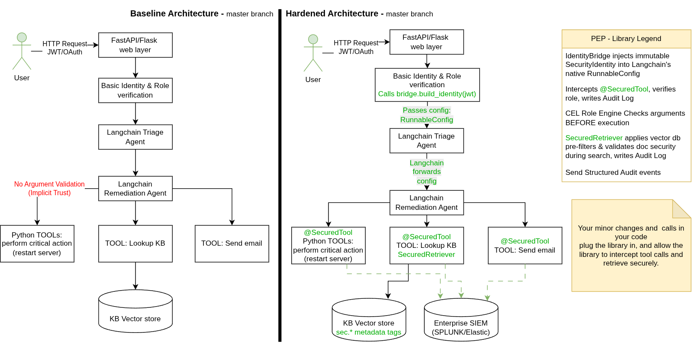

Chapter 1: Architecture Blueprint & System Boundaries
Integrating GenAI agents into an enterprise stack should not require rebuilding your security architecture from scratch. If your organization already has an established Identity Provider, a role-based access control (RBAC) database, and an enterprise logging system, this library is built to slip directly between those existing pieces and your LangChain workflows without getting in the way.
The Library as an Inline Security Checkpoint (PEP)
In security architecture terminology, a Policy Enforcement Point (PEP) is simply the gatekeeper or security guard standing at the door. It intercepts incoming requests, asks an authorization engine whether the request is allowed, and either permits the operation to proceed or blocks it immediately.
This library functions as an inline PEP inside your Python application. Instead of relying on LangChain or external LLM models to police themselves through system prompts, the library intercepts execution across three key boundaries:
The Front Door: Before a user prompt ever reaches a language model or constructs a prompt chain.
The Data Boundary: Before internal documents from your vector databases enter the model context window.
- The Tool Boundary: Before an agent executes a Python function, writes to a database, or calls an external enterprise API.

Clarifying the Jargon: PEP vs. PDP
To make implementation straightforward across teams, keep the distinction between enforcement and decision-making clear:
PEP (Policy Enforcement Point — The Enforcer): This library. It sits inline within the code, halts unauthorized tool calls, redacts unauthorized retrieved documents, and prevents unauthorized prompt runs.
PDP (Policy Decision Point — The Brain): The engine that actually evaluates the rules. You can run the library's embedded in-memory PDP for local role hierarchies, or connect an external PDP like Open Policy Agent (OPA) to evaluate enterprise-wide policies.
The PEP catches the action, asks the PDP for a verdict ("allow" or "deny"), and enforces that verdict with zero ambiguity.
The Four System Boundaries
The architecture organizes protection across four distinct system boundaries:
1. Entry Boundary (Agent Entry Points): The
SecureRunnablewrapper validates caller entitlements immediately upon invocation, ensuring unauthorized requests are rejected before prompt templates are populated or model tokens are consumed.2. Retrieval Boundary (Document Search & Ingestion): Ingestion pipelines stamp chunks with tamper-evident
sec:*metadata tags, and theSecureRetrieverconverts caller roles into native vector store filters combined with post-retrieval verification to prevent candidate starvation and data leaks.- 3. Tool Boundary (Action Guardrails): Decorated tools evaluate Common Expression Language (CEL) constraints against incoming arguments, halting mutating actions instantly while returning safe feedback for informational tools.
- 4. Observability Boundary (Enterprise SIEM): A non-blocking asynchronous ring buffer strips sensitive parameters and streams structured security audit events to your enterprise logging systems without adding latency to model response times.
End-to-End Enforcement Lifecycle
While the four boundaries define where security controls exist, understanding how a request flows through them chronologically is essential. The core principle of the library is pre-execution determinism: security evaluation occurs in the Python runtime before any tool executes or vector chunk is returned, consuming zero LLM prompt tokens and eliminating prompt-injection and privilege escalation risks.
sequenceDiagram
autonumber
actor Caller as Client / Web Layer
participant Bridge as IdentityBridge (PIP)
participant Runnable as SecureRunnable (Boundary 1: Entry PEP)
participant Agent as LangChain Agent / LCEL
participant ToolPEP as @secured_tool (Boundary 3: Tool PEP)
participant PDP as Policy Decision Engine (PDP)
participant CEL as CEL Evaluator
participant SIEM as AuditPublisherSPI (Boundary 4: Observability)
participant Tool as Target Tool Callable
Caller->>Bridge: create_runnable_config(security_identity)
Bridge-->>Caller: config (with in-band identity)
Caller->>Runnable: invoke(input, config=config)
rect rgb(245, 248, 255)
Note over Runnable,PDP: Boundary 1: Entry Enforcement
Runnable->>PDP: evaluate(subject, action="AGENT_INVOKE")
PDP-->>Runnable: PERMIT
end
Runnable->>Agent: execute_chain(prompt, config)
Agent->>ToolPEP: invoke_tool(args, config)
rect rgb(240, 253, 244)
Note over ToolPEP,CEL: Boundary 3: Tool Parameter Guardrails (0 LLM Tokens)
ToolPEP->>CEL: evaluate_expression(cel_rule, args, subject)
CEL-->>ToolPEP: Condition Satisfied
ToolPEP->>PDP: evaluate(subject, action="TOOL_EXECUTE", resource)
PDP-->>ToolPEP: PERMIT (Evaluated via L1/L2 Cache)
ToolPEP->>SIEM: publish(AuditEvent: PERMIT)
end
ToolPEP->>Tool: execute(*args, **kwargs)
Tool-->>ToolPEP: raw_output
ToolPEP-->>Agent: sanitized_output (PII redacted)
Agent-->>Runnable: final_response
Runnable-->>Caller: secure_result
Chronological Execution Phases
- Context Ingestion & Binding (Boundary 1 — Entry): Your web layer extracts authenticated user credentials (JWT/OAuth) and uses
IdentityBridgeto construct an immutableSecurityIdentity. This identity is bound directly into LangChain's nativeRunnableConfig. The identity travels in-band across all downstream Runnables, agents, and tool invocations without polluting the model prompt context. - Agent Admission Evaluation (Boundary 1 — Entry): The
SecureRunnablePEP queries the PDP to verify caller role entitlement and clearance floor. If the user lacks access, execution is immediately halted with aSecurityAuthorizationErrorbefore prompt serialization or LLM token expenditure occurs. - Pre-Execution Tool Guardrails (Boundary 3 — Tool): When an agent emits a tool call, the
@secured_tooldecorator intercepts execution before the target Python function runs. It evaluates Common Expression Language (CEL) predicates against runtime parameters (e.g., verifying that a server hostname matches the user's assigned department). - Zero-Latency Policy Evaluation (PDP): The PEP queries the PDP engine. By leveraging two-tier caching (L1 thread-local memoization and L2 TTL-based LRU cache), repeated evaluations complete in sub-millisecond local Python execution.
- Asynchronous Audit Streaming (Boundary 4 — Observability): Regardless of whether an operation is permitted or denied, an immutable RFC 5424 structured event is dispatched to the background ring buffer. Telemetry is shipped asynchronously to enterprise log aggregators (Splunk, Elastic) without blocking the user response.
Key Architectural Guarantee:
If the model hallucinates an invalid parameter, attempts an unauthorized action, or is hijacked via prompt injection, the code-level PEP denies execution deterministically. The target Python callable never runs, and the incident is recorded in SIEM.
Mapping the Four Boundaries to Your Application
When planning the hardening of your enterprise AI application, identify where these four boundaries lie within your codebase. Throughout this guide, we ground each boundary using our reference assistant (langchain-enterprise-incident-assistant) as a realistic case study, comparing its unhardened master baseline with its hardened secured target:
| System Boundary | Where It Sits in Your Enterprise Stack | Reference Assistant Implementation |
|---|---|---|
| 1. Entry Boundary | API controllers, FastAPI/Flask route handlers, background queue workers | app/routers/tickets.py and app/agents/triage_agent.py (see Chapter 4) |
| 2. Retrieval Boundary | ETL document loaders, chunk splitters, vector store retrievers (Chroma, Pinecone, OpenSearch) | app/agents/knowledge_base_store.py (see Chapter 5 & Chapter 6) |
| 3. Tool Boundary | Agent tools calling internal microservices, DB queries, cloud infrastructure APIs | app/agents/infrastructure_tools.py and app/security/entity_resolver.py (see Chapter 7 & Chapter 8) |
| 4. Observability Boundary | Log aggregation forwarders, SIEM pipelines (Splunk, Elastic, OpenTelemetry) | app/security/security_integration.py and app/agents/guardrail_tests_telemetry_helper.py (see Chapter 9 & Chapter 10) |
By mapping each boundary in your existing architecture to its corresponding checkpoint, you can incrementally harden your service without having to refactor core business logic or rewrite LangChain chains.